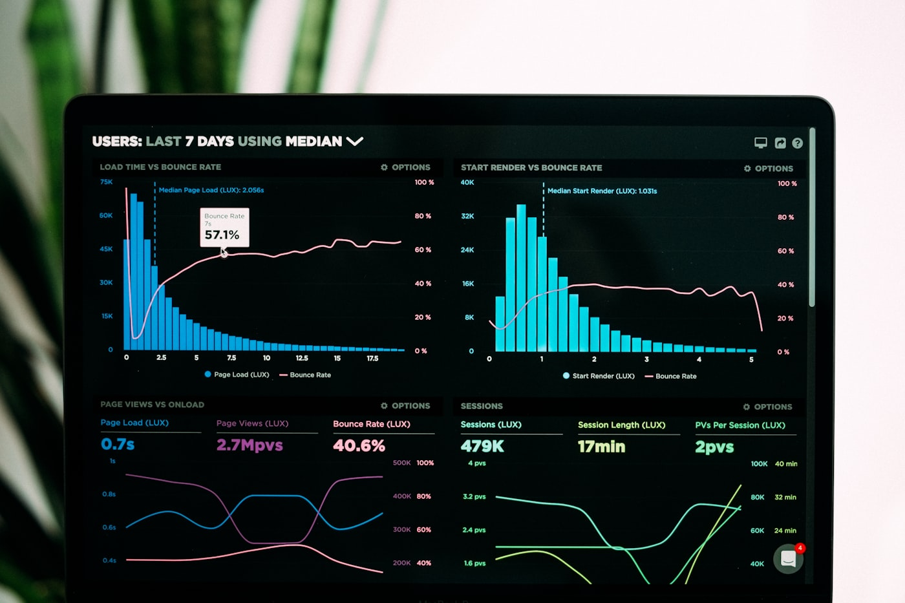

Siloed data sources
Critical data lives in disconnected systems — every report becomes a manual reconciliation exercise.
Data & Analytics
We turn scattered, untrusted data into one beautiful, governed source of truth, engineered on Microsoft Fabric and Azure, and designed in Power BI so decisions get made in seconds, not weeks.
Most Egyptian and Gulf enterprises are running on fragmented sources, manual spreadsheets, and disconnected systems. Insights stall before they reach the executive dashboards and AI models that need them.
Critical data lives in disconnected systems — every report becomes a manual reconciliation exercise.
Without quality frameworks and ownership, teams don’t trust the numbers they see in dashboards.
Batch exports and email chains mean leadership decides on yesterday’s data, not today’s reality.
Organizations invest in data tools but still can’t answer basic questions with confidence.
We build data platforms around how decisions are actually made — not retrofitted after the fact.
“We don’t hand you a roadmap and wish you luck. We build what’s on it, then we stay.”
Digital Hub · Data & Analytics Team
We transform fragmented data into governed, trusted, and actionable intelligence across the full data lifecycle.
From data strategy through governed platforms — a delivery model that turns fragmented sources into trusted intelligence.

Evaluate data maturity, sources, governance gaps, and analytics goals. Define a prioritized roadmap aligned to business objectives.

Design warehouse, lakehouse, or hybrid platforms with quality frameworks, MDM, and security controls built in from day one.

Build ETL/ELT pipelines, unify enterprise sources, and deploy dashboards and portals stakeholders can trust daily.

Apply DataOps discipline — monitored pipelines, controlled changes, and continuous refinement of data quality and insights.
Industry experience matters. We don’t learn your business on your budget.
Digital service portals, planning systems, data infrastructure. Ministry of Planning, BUE, CGC.
Core banking integrations, workflow automation, customer portals. Banque Misr, CGC, FAB Misr.
ERP integration, maintenance systems, workforce apps. Elsewedy Electric, Kandil Steel, Mansour.
Operations platforms, safety systems, reporting. Abu Qir Petroleum, ENAP.
Student portals, smart campus systems, academic platforms. British University in Egypt.
Customer platforms, workforce apps, integration layers. Nexthink DEX enterprise deployments.
Real projects. Real outcomes. Across Egypt’s most demanding institutions.

Full development of Egyptian planning systems for the Ministry of Planning & Economic Development — data warehouse, cybersecurity, advanced dashboards, and platform support.
Read More
Infrastructure and digital transformation consulting for the Credit Guarantee Corporation — establishing a complete data center and enterprise information infrastructure.
Read More
Deployed Nexthink DEX across a major bank’s full IT environment — giving the IT team live visibility into endpoint health and employee experience at scale.
Read More
End-to-end design and delivery of a citizen-facing digital services platform — unified identity, workflow automation, and analytics for leadership dashboards.
Read More